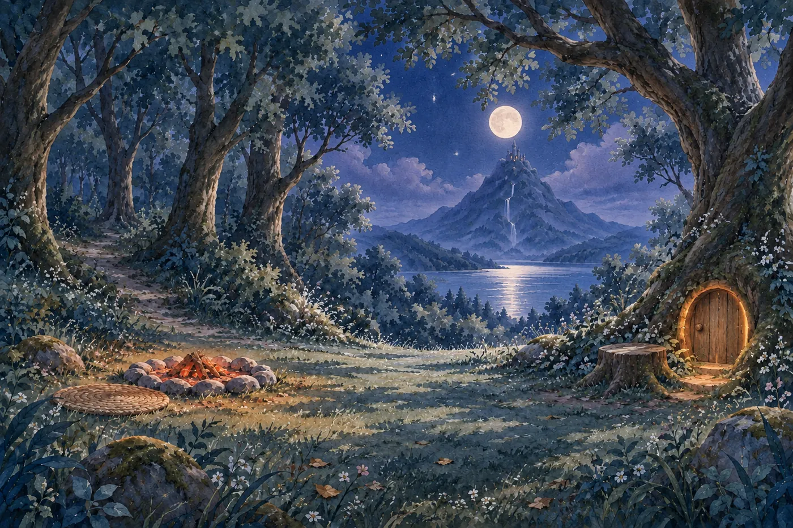
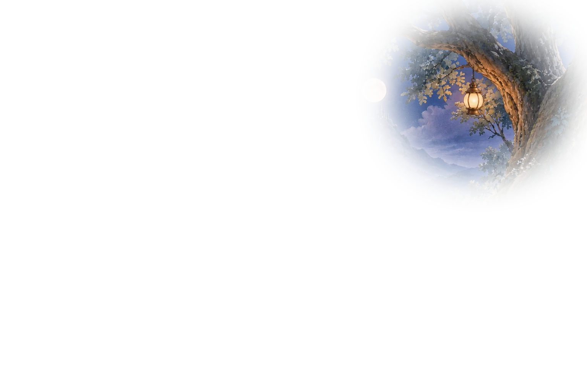

The rabbit tells the story, and your child reads the line that makes it happen. A word that won’t come, they read together.


Night has come to camp, and it’s getting dark. Let’s light our lamp. There it is. Now our camp is warm and bright.
Your child reads aloud
The lamp is lit.